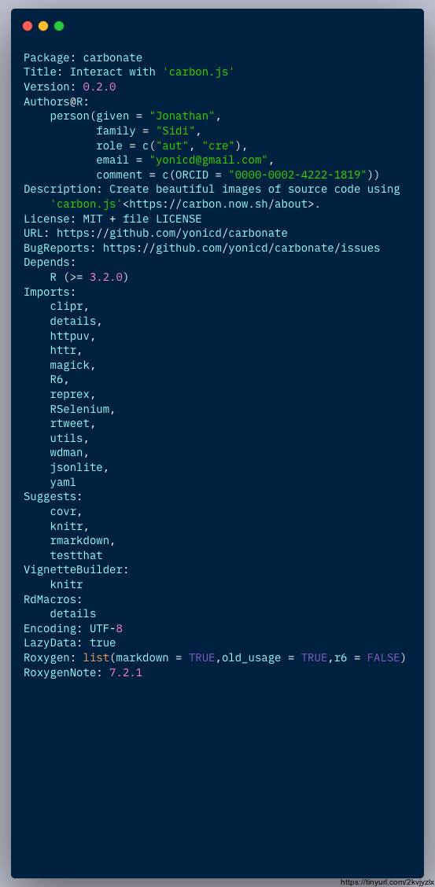

“carbon.js is the easiest way to create beautiful images of your source code.”
This package uses an R6 api to interact with carbon.js and create directly from the console carbon images.
Like the image below:
Installation
#remotes::install_github('yonicd/carbonate')
install.packages('carbonate')Usage
Initialize new carbon object
The default code in the carbon object is taken from the clipboard.
x <- carbon$new()But can also be defined inline. Code can be a character object of any length.
The code is kept in the object and can be changed at any time.
x$code
#> [1] "Package: carbonate"
#> [2] "Title: Interact with 'carbon.js'"
#> [3] "Version: 0.2.0"
#> [4] "Authors@R: "
#> [5] " person(given = \"Jonathan\","
#> [6] " family = \"Sidi\","
#> [7] " role = c(\"aut\", \"cre\"),"
#> [8] " email = \"yonicd@gmail.com\","
#> [9] " comment = c(ORCID = \"0000-0002-4222-1819\"))"
#> [10] "Description: Create beautiful images of source code using"
#> [11] " 'carbon.js'<https://carbon.now.sh/about>."
#> [12] "License: MIT + file LICENSE"
#> [13] "URL: https://github.com/yonicd/carbonate"
#> [14] "BugReports: https://github.com/yonicd/carbonate/issues"
#> [15] "Depends: "
#> [16] " R (>= 3.2.0)"
#> [17] "Imports: "
#> [18] " clipr,"
#> [19] " details,"
#> [20] " httpuv,"
#> [21] " httr,"
#> [22] " magick,"
#> [23] " R6,"
#> [24] " reprex,"
#> [25] " RSelenium,"
#> [26] " rtweet,"
#> [27] " utils,"
#> [28] " wdman,"
#> [29] " jsonlite,"
#> [30] " yaml"
#> [31] "Suggests: "
#> [32] " covr,"
#> [33] " knitr,"
#> [34] " rmarkdown,"
#> [35] " testthat"
#> [36] "VignetteBuilder: "
#> [37] " knitr"
#> [38] "RdMacros: "
#> [39] " details"
#> [40] "Encoding: UTF-8"
#> [41] "LazyData: true"
#> [42] "Roxygen: list(markdown = TRUE,old_usage = TRUE,r6 = FALSE)"
#> [43] "RoxygenNote: 7.2.1"The main job of the R6 object is to convert all the options into a uri that is sent to the carbon url page, where it is processed.
x$uri()
#> [1] "https://carbon.now.sh/?bg=rgba(171%2C175%2C195%2C0.7)&t=panda-syntax&wt=none&l=r&ds=true&dsyoff=20px&dsblur=68px&wc=true&wa=true&pv=11px&ph=14px&ln=false&fm=Fira%20Code&fs=14px&lh=133%25&si=false&es=1x&wm=false&ts=false&code=Package%253A%2520carbonate%250ATitle%253A%2520Interact%2520with%2520%27carbon.js%27%250AVersion%253A%25200.2.0%250AAuthors%2540R%253A%2520%250A%2520%2520%2520%2520person(given%2520%253D%2520%2522Jonathan%2522%252C%250A%2520%2520%2520%2520%2520%2520%2520%2520%2520%2520%2520family%2520%253D%2520%2522Sidi%2522%252C%250A%2520%2520%2520%2520%2520%2520%2520%2520%2520%2520%2520role%2520%253D%2520c(%2522aut%2522%252C%2520%2522cre%2522)%252C%250A%2520%2520%2520%2520%2520%2520%2520%2520%2520%2520%2520email%2520%253D%2520%2522yonicd%2540gmail.com%2522%252C%250A%2520%2520%2520%2520%2520%2520%2520%2520%2520%2520%2520comment%2520%253D%2520c(ORCID%2520%253D%2520%25220000-0002-4222-1819%2522))%250ADescription%253A%2520Create%2520beautiful%2520images%2520of%2520source%2520code%2520using%250A%2520%2520%2520%2520%27carbon.js%27%253Chttps%253A%252F%252Fcarbon.now.sh%252Fabout%253E.%250ALicense%253A%2520MIT%2520%252B%2520file%2520LICENSE%250AURL%253A%2520https%253A%252F%252Fgithub.com%252Fyonicd%252Fcarbonate%250ABugReports%253A%2520https%253A%252F%252Fgithub.com%252Fyonicd%252Fcarbonate%252Fissues%250ADepends%253A%2520%250A%2520%2520%2520%2520R%2520(%253E%253D%25203.2.0)%250AImports%253A%2520%250A%2520%2520%2520%2520clipr%252C%250A%2520%2520%2520%2520details%252C%250A%2520%2520%2520%2520httpuv%252C%250A%2520%2520%2520%2520httr%252C%250A%2520%2520%2520%2520magick%252C%250A%2520%2520%2520%2520R6%252C%250A%2520%2520%2520%2520reprex%252C%250A%2520%2520%2520%2520RSelenium%252C%250A%2520%2520%2520%2520rtweet%252C%250A%2520%2520%2520%2520utils%252C%250A%2520%2520%2520%2520wdman%252C%250A%2520%2520%2520%2520jsonlite%252C%250A%2520%2520%2520%2520yaml%250ASuggests%253A%2520%250A%2520%2520%2520%2520covr%252C%250A%2520%2520%2520%2520knitr%252C%250A%2520%2520%2520%2520rmarkdown%252C%250A%2520%2520%2520%2520testthat%250AVignetteBuilder%253A%2520%250A%2520%2520%2520%2520knitr%250ARdMacros%253A%2520%250A%2520%2520%2520%2520details%250AEncoding%253A%2520UTF-8%250ALazyData%253A%2520true%250ARoxygen%253A%2520list(markdown%2520%253D%2520TRUE%252Cold_usage%2520%253D%2520TRUE%252Cr6%2520%253D%2520FALSE)%250ARoxygenNote%253A%25207.2.1"Click the link to see the URI works.
Manipulate carbon object
Aesthetics of the carbon object that can be manipulated
| Carbon Variable | Carbonate Variable | Description | Default |
|---|---|---|---|
| l | language | language | r |
| bg | palette | layout pallete (vector with c(r,g,b,a) | c(r=171,g=184,b=195,a=1) |
| t | template | layout template (listed in get_templates()) | ‘seti’ |
| wc | add_window_control | add/remove window controls (circles on top left corner) | TRUE |
| wt | window_control_theme | change window control themes (listed in get_windows_control_themes()) | ‘none’ |
| ds | add_drop_shadow | add/remove dropshadow | TRUE |
| dsyoff | drop_shadow_offset_y | shadow vertical offset (px) | 20 |
| dsblur | drop_shadow_blur_radius | shadow blur radius (px) | 68 |
| wa | auto_adjust_width | auto-audjust output width | TRUE |
| pv | padding_vertical | vertical padding (px) | 48 |
| ph | padding_horizontal | horizontal padding (px) | 32 |
| ln | add_line_number | add/remove line numbers | FALSE |
| fm | font_family | layout font family (listed in get_font_families()) | ‘Hack’ |
| fs | font_size | font size (px) | 14 |
| lh | line_height_percent | relative space between lines (percent) | 133 |
| si | square_image | output image is square | FALSE |
| es | relative_export_size | image size in export relative to what is in the preview (1,2 or 4) | 1 |
| wm | add_watermark | add official carbon.js watermark | FALSE |
x$get_templates()
#> [1] "3024-night" "a11y-dark" "blackboard"
#> [4] "base16-dark" "base16-light" "cobalt"
#> [7] "dracula" "duotone-dark" "hopscotch"
#> [10] "lucario" "material" "monokai"
#> [13] "night-owl" "nord" "oceanic-next"
#> [16] "one-light" "one-dark" "panda-syntax"
#> [19] "paraiso-dark" "seti" "shades-of-purple"
#> [22] "solarized dark" "solarized light" "synthwave-84"
#> [25] "twilight" "verminal" "vscode"
#> [28] "yeti" "zenburn"
x$get_font_families()
#> [1] "Anonymous Pro" "Cascadia Code" "Droid Sans Mono"
#> [4] "Fantasque Sans Mono" "Fira Code" "Hack"
#> [7] "IBM Plex Mono" "Inconsolata" "JetBrains Mono"
#> [10] "Monoid" "Source Code Pro" "Space Mono"
#> [13] "Ubuntu Mono"
x$get_windows_control_themes()
#> [1] "none" "sharp" "bw"Personal Configuration
Users can use a file called carbon.yml and place it in their home directory (~) to override the packages defaults in order to create a session peristent carbon template they like. The config file controls all the public carbon object fields. The following is an example of such a configuration file.
These fields will set
- The palette (rgba)
gandafields to 175 and 0.7 respectively - The template will be set to
panda-syntax - The font to
Fira Code - The padding around the output will be made tighter than the system defaults 11px and 14px.
palette:
- g: 175.0
- a: 0.7
template: panda-syntax
font_family: Fira Code
padding_vertical: 11
padding_horizontal: 14Set the download directory
x$download_path <- file.path('README_files/download')Carbonate code directly to file
This function depends on RSelenium
x$carbonate(file = 'myfile.png')
x$template <-'cobalt'
x$carbonate(file = 'new_template.png')
x$font_family <-'IBM Plex Mono'
x$carbonate(file = 'new_font.png')Sharing
Tinyurl
You can also put a tinyurl link as a watermark on the image produced that will open to the carbon.now.sh page that has the code in the image.
x$add_tinyurl <- TRUE
x$carbonate(file = 'tiny_url.png')
If you just want the tinyurl link without the image to use in a tweet you can create it using
x$tiny()
#> [1] "https://tinyurl.com/2kvjyzlx"Or you can put the link directly on your clipboard
x$tiny(clip = TRUE)
#> [1] "https://tinyurl.com/2kvjyzlx"
clipr::read_clip()
#> [1] "https://tinyurl.com/2kvjyzlx"Direct
You can also directly tweet the image. An automatic status is created with two options
- Default
- Created in R using the Carbonate üì¶
- When
add_tinyurl <- TRUE- Created in R using the Carbonate üì¶ Check out this script at üîó https://tinyurl.com/2kvjyzlx
- Manual
- Using
tweet_statusyou can write your own status.
- Using
x <- carbonate::carbon$new()
x$tweet <- TRUE
x$carbonate()Post process (Batch)
If you have images stored in x$carbons you can post them also in a tweet using.
# for multiple png attachments
x$rtweet(x$carbons,media_type = 'png') #using default status
# subsets of images
x$rtweet(status='These are images',x$carbons[c(1,3)],media_type = 'png')
# for gifs
x$rtweet(status='This is a gif', x$carbons,media_type = 'gif')Post image processing
All carbon outputs are collected and saved in the list x$carbons
Combining
x$carbons%>%
magick::image_scale('300')%>%
magick::image_append()
x$carbons%>%
magick::image_scale('300')%>%
magick::image_append(stack = TRUE)GIFs
x$carbons%>%
magick::image_animate(fps = 1)